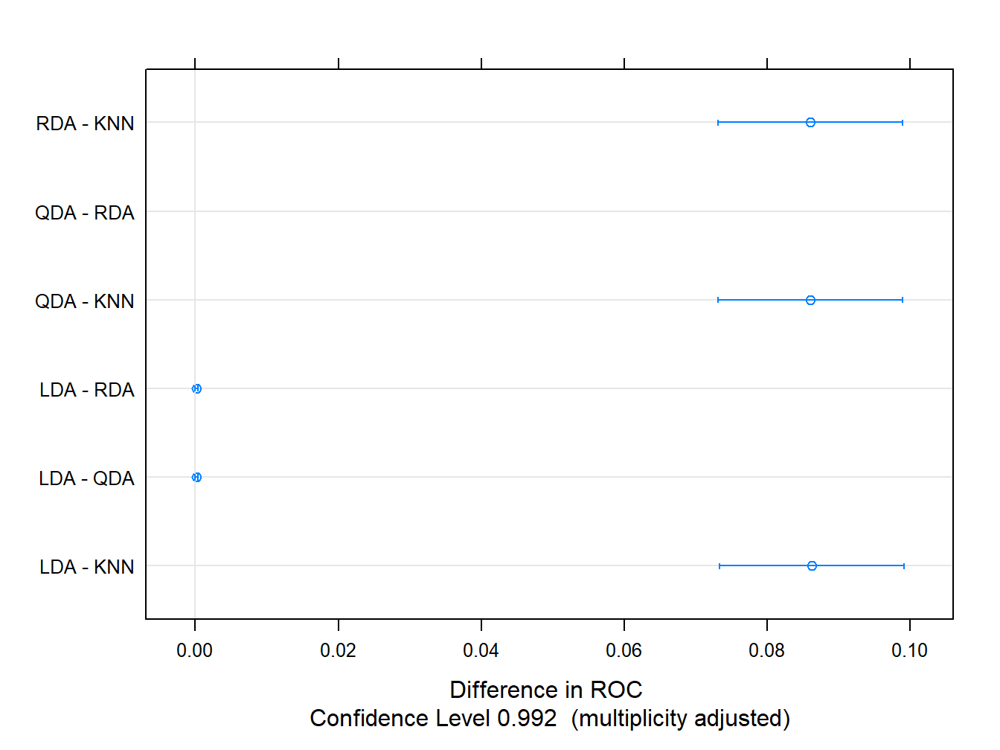

5.1 Comentarios finales: reducción de la dimensión
Aunque queda fuera del aprendizaje supervisado, como posible solución a la alta dimensionalidad de los datos, en caret es posible aplicar técnicas no supervisadas que permiten reducir la dimensión. Una de ellas es el Análisis de Componentes Principales (PCA, por sus siglas en inglés). Veamos cómo hacer esto con la función preProcess:
# en este caso estamos reduciendo la cantidad de variables iniciales
# a solamente ¡2!
preProc.res <- preProcess(df, method = c('pca'), pcaComp = 2)
df.pca <- predict(preProc.res, df)
head(df.pca, 7)## diagnosis PC1 PC2
## 1 M -9.184755 -1.946870
## 2 M -2.385703 3.764859
## 3 M -5.728855 1.074229
## 4 M -7.116691 -10.266556
## 5 M -3.931842 1.946359
## 6 M -2.378155 -3.946456
## 7 M -2.236915 2.687666Veamos qué tan separadas quedan las clases ahora:
ggplot(df.pca, aes(x = PC1, y = PC2, group = diagnosis)) +
geom_point(aes(color = diagnosis ), alpha = 0.8) +
theme_light()
Si volvemos a hacer la partición de los datos (mismos índices para el test);
# Ajustemos nuestros modelos con los datos transformados:
train_df <- df.pca[train.ID, ]
test_df <- df.pca[-train.ID, ]entonces, podemos aplicar todos los modelos estudiados a un conjunto de datos de menor complejidad. Esto es una ganancia en tiempo de cómputo… ¿será también en términos predictivos? Intenta también representar la frontera de decisión correspondiente a cada método, usando como base la ya conocida decision_bound.
Finalmente, comentar que el LDA también puede ser visto como un método de reducción de la dimensión. La visión de Fisher del discriminante lineal contempla encontrar la mejor proyección de los datos (a una dimensión inferior) que permita separar bien las clases. Esto se logra persiguiendo la mayor dispersión posible en los datos.
Más información sobre el PCA puede ser consultada en los libros que se citan al final del documento. Una buena introducción a esta visión del LDA está disponible en las lecciones de Prof. Olga Veksler. También se recomiendo el excelente post de Matthias Döring.